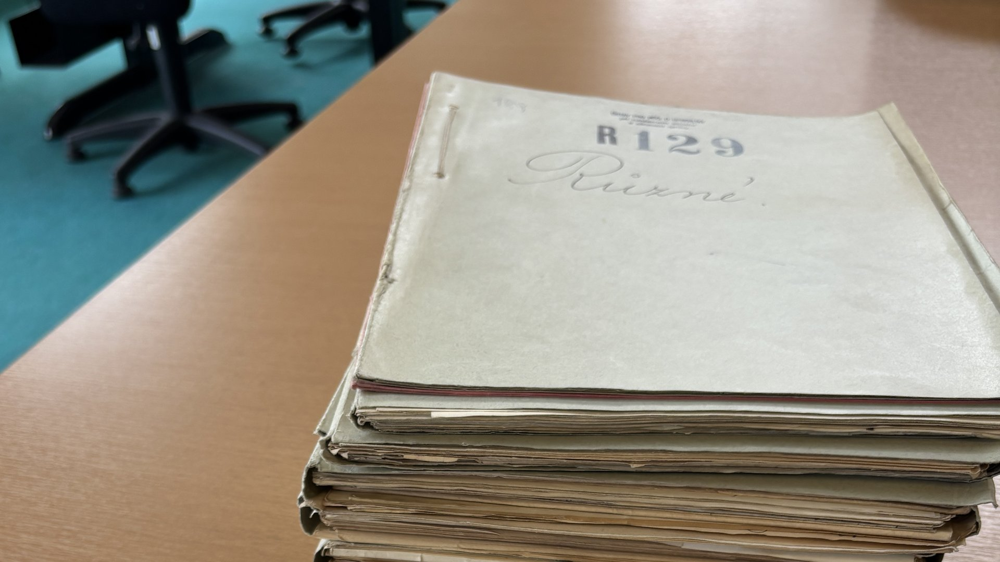

Czechoslovakia · 1938
The Sudetenland
The annexation of the Sudetenland and the postwar expulsion of ethnic Germans left behind a landscape of contested memory. This strand of the project traces how that loss has been archived, organized, and politicized across generations — from state resettlement records of the late 1930s to the discourse of present-day Sudeten German associations.
Methods: archival research in Czech and German state records; a social-media discourse pipeline (Facebook, YouTube) tracking contemporary Sudeten German organizing around the 2026 Brno sjezd; comparative-historical analysis of displacement bureaucracy.